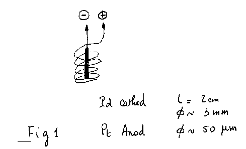
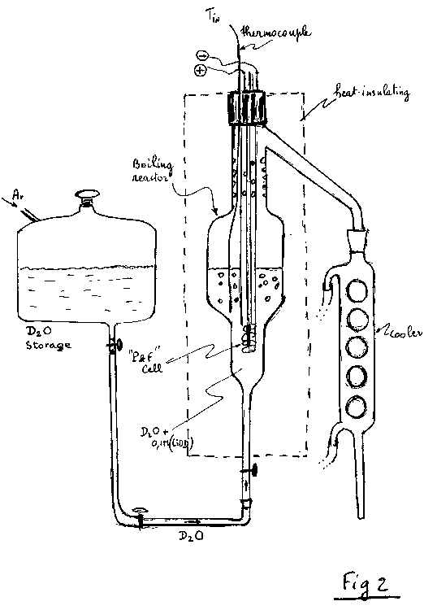
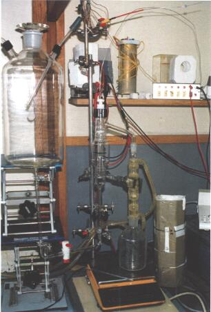
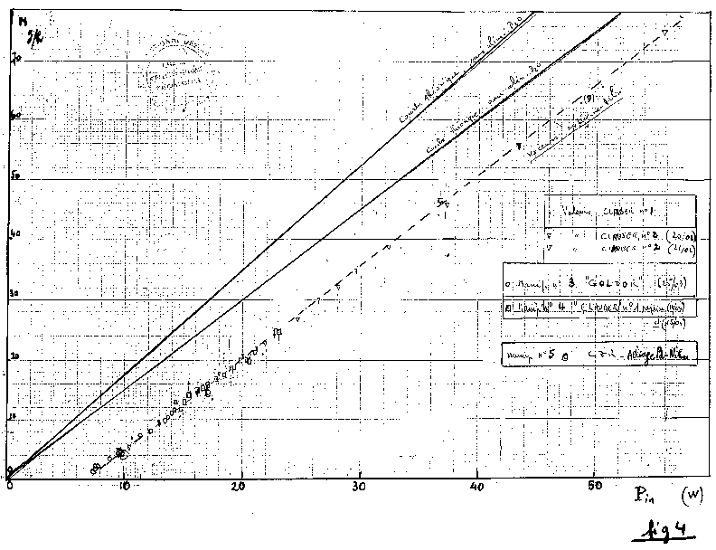
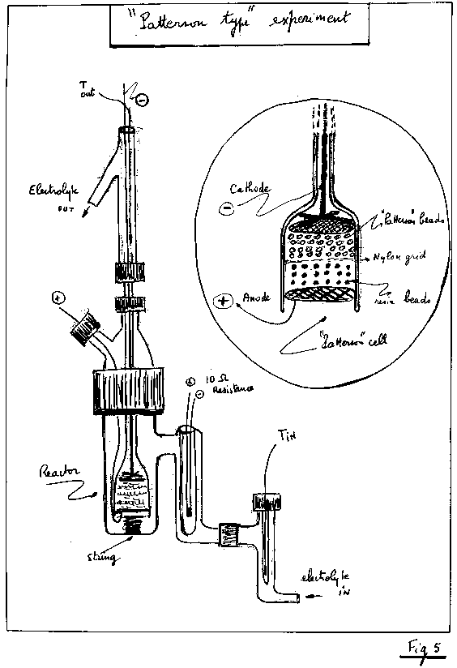
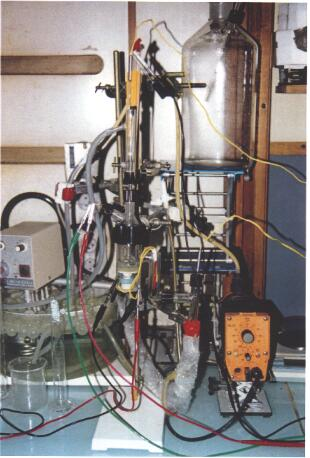
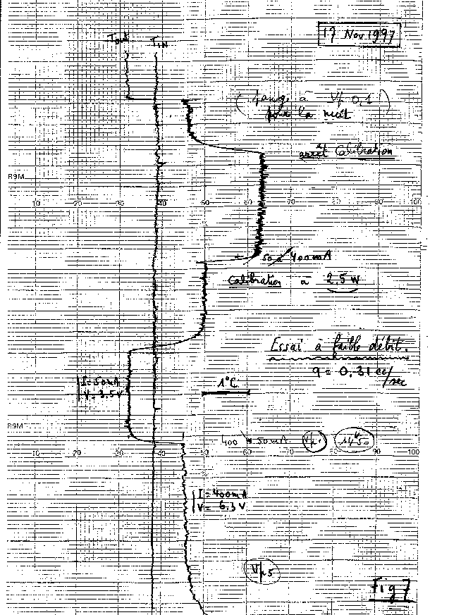
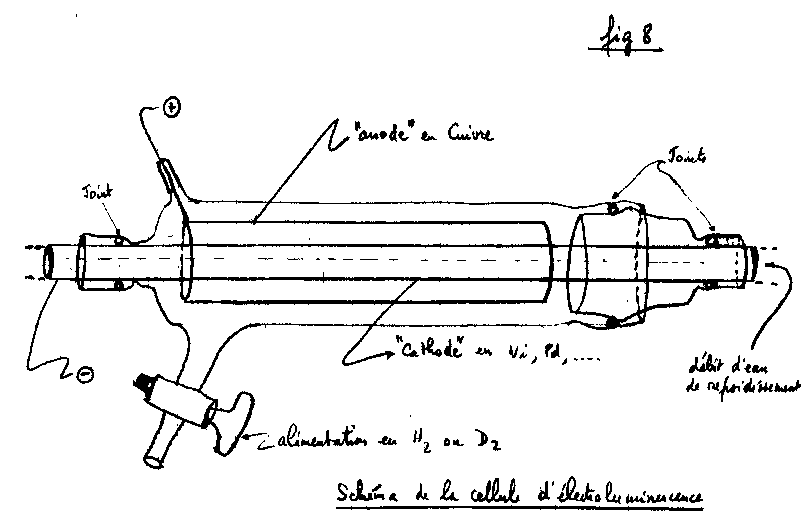
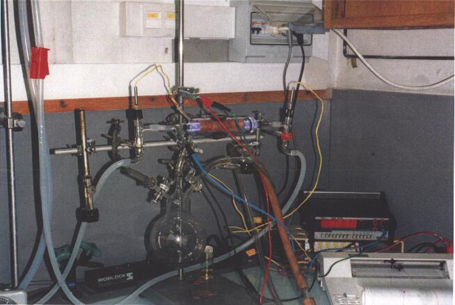
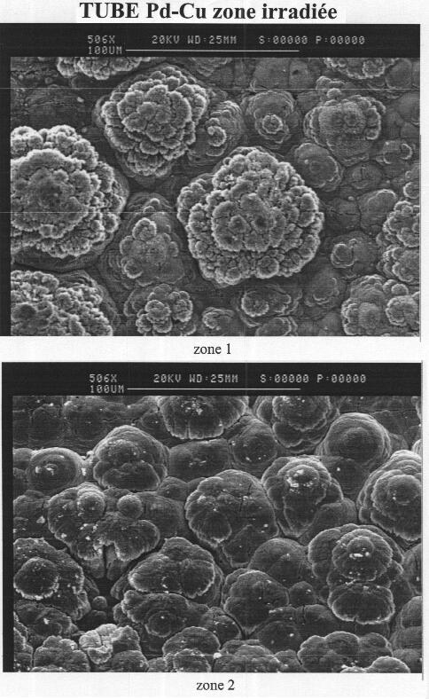

RESEARCH OF ANOMALOUS EXCESS HEAT
IN " COLD FUSION " TYPE EXPERIMENTS
P.P.Clauzon , J.F.Fauvarque , F.Joubert
Laboratoire d'Electrochimie Industrielle du CNAM (Paris)
Created on 09-25-98 - Last Update 11-10-98
ABSTRACT : This paper gives a brief description of three types of "cold fusion" experiments done in our laboratory from January 1996 to July 1998:
1- "Pons and Fleishmann" type experiments ( P&F) at boiling temperature,
2- "Patterson " type experiment, in cooperation with CEN Grenoble, in particular for beads supply,
3- A new type of glow discharge experiment, which allows us to get protons
under about 400 volts potential.
Without prejudging the reality of the "cold fusion" phenomenon, we must say that we have neither seen any anomalous excess heat nor any kind of nuclear transmutations.
___________________
1 P&F TYPE EXPERIMENTS:
-Introduction:
These experiments were made at boiling temperature (about 100°C) for two reasons. First, we found in the litterature (1-2), that the excess heat is larger at boiling. Second, we avoid the accuracy problems related to temperature measurements.
-Experimental:
We made an electrolysis of heavy water with 0.1M of LiOD. The cathod was a small rod of Palladium (L about 2cm, D about 3mm). Different sources of Palladium (Pd) were tested; also, different alloys were tested. The anod was a Platinum wire of 50 µm diameter.(cf Figure 1)

The general scheme is given in Figure 2. A photographic view (Figure 3) shows how the experiment was set up and in particular how the heat insulation was fixed with a polystyren device.


The experimental process was the following:
-deuterium loading during about 3 weeks (200 mA, 5.5 Volts initially)
-then, progressive increase of the current intensity in 2 or 3 steps (few hours) up to get boiling.
-at boiling,we fixed the current intensity at a constant level.
-we plotted versus time the potential in volts ( the potential increases
slowly due to various deposits (SiO2 ect..) on the electrods) and then the power in watts ( Pin = ( V - 1.54)* I ).
-we plotted versus time the weight of the condensed heavy water.
- Results:

Figure 4 gives the results obtained with various cathods. Two straight lines are drawn: -the theoritical line without D2O supply (for compensating the D2O consumption)
-the theoritical line with D2O supply (in that case, the D2O level is set constant due to an external supply).One has to take into account the heat used to bring the added D2O from about 20°C (room temperature) to about 100°C (boiling temperature).
One can see in Figure 4 that the beginning of boiling (at about 7 watts) gives the level of the thermal leakage of this experiment.As the temperatures remain constant, the thermal leakage must remain constant and this is what we can see on the experimental plotted line. The experimental results are plotted on a line parallel to the theoritical line already mentionned, and, in that case, the line with D2O supply. This case was in fact the general case.
The dispersion of the spots around the mean line gives an idea of the quite good accuracy of the measurements.
Any excess heat would have been seen by a positive deviation to this mean line. As we can see, no deviation was observed.
2-PATTERSON TYPE EXPERIMENT:
- Experimental:
In that case, the electrolysis concerns light water with Li2SO4 as electrolyte.The cathod is there made of small beads (D = 0.5mm) of plastic material coated with successive layers of Nickel and Palladium (about 1 µm thickness for each layer). The anod is in Platinum-coated Titanium.The inventor is known for his works on catalysis with a lot of patents in this area. The beads we used for were supplied by the CEA (CEN Grenoble).

Figure 5 gives the scheme of the experiment with an enlargement of the reactor cell itself. One can see the "Patterson" beads, the Nickel grid used to hold the beads with a Nickel rod , then resin beads which separate the cathod from the anod which is a grid in Pt-coated Titanium.A known electrolyte flow, the inlet and outlet temperatures of which are measured by standard thermocouples (+ or - 0.05°C), allow to calculate the power released in a tank, which is maintained at a given temperature (between 25°C to 60°C). A resistance, fixed in the loop between the two thermocouples, makes possible a periodic calibration.

Fig6Figure 6 shows the experimental set-up. Thermal leaks are reduced by insulating material, not shown there in the photography. These leaks, anyway, are small because the operating temperature is in general near to the room temperature.
-Results and discussion:
The cross-section of the cathod (about 6cm2) does not allow us to go higher than about 400mA for the direct electrolysis current. For this value, the observed potential is about 7 volts. The power released is then P = (7-1.48)*0.4=2.2 watts.
The flow range we used for goes between 0.3cm3 to 3cm3 per second. So the nominal DeltaT goes from 1.76°C to 0.18°C.
The temperatures values are known at + or - 0.05°C at the best. So the power itself is known at the best at about 10% (for a flow of 0.3cm3 per sec.) and this by supposing a good flow measurement. So, the excess heat must be large enough to be meaningful (higher than 20 to 30%).

Figure 7 gives a typical example of the measurements made.The flow was O.31cm3 per sec. The difference between the DeltaT of two different operating conditions: 50mA-3.5Volts and 400mA-6.3Volts gives: 1.4°C.
The measured value is 1.3 to 1.4°C.
The calibration for 2.5w gives a DeltaT worth of 1.8°C instead of the calculated value of 2.5/(0.31*4.18) = 1.93°C. i.e. a 1.93/1.8= 1.07 correction.This would lead the previous experimental value from about 1.4°C to about 1.5°C.
As mentionned earlier, due to the temperatures measurements uncertainties, this result do not allow us to quote for any excess heat.
In conclusion, we do not have seen any real excess heat, large enough and reproduceable.
3-GLOW DISCHARGE EXPERIMENTS:
-Introduction:
We decided to see if we would be more lucky to get any "cold fusion" event in gaseous media and in particular with higher potential than those encountered in electrolysis (about 500Volts instead of a few ten Volts). Our hope was that perhaps protons of higher energy would be more efficient on the surface of the studied cathods of Nickel or Palladium.
-Experimental:

Figure 8 shows on scale 1 the scheme of our choosen device. The glow discharge experiment is working under a very small hydrogen pressure ( between 6 to 15 millibars) and in our case for a potential between 300 to 500 Volts. We choose a direct current of 0.3 to 0.8 Ampere in order to limit the maximum power reached to about 300 watts. Our device and in particular the seals would not undergone too high temperatures. Cooling is done by a water flow inside the central tube. We do not mention the two thermocouples at the inlet and outlet of the water tube but they can be seen on the photography of the experimental device ( Figure 9 ). One can see the blue-shaded glow in hydrogen medium. A plastic screen not shown in this Fig.9 allowed us to avoid the eventual effects of UV rays.An hydrogen tank linked to the cell gives an hydrogen storage to cope with an eventual hydrogen consumption due to reactions between protons and the metallic "cathod".

Fig 9-Results:
The main problems to solve in this experiment is the tightness of the seals of the pressure measurements, gas supply and void taps. This is why we were not able to state definitively on an eventual hydrogen consumption at the cathod surface.The cathod was generally made of a copper tube (tight to hydrogen) coated with the metal to be studied : Ni, Pd, or Ni-Pd alloys. A stainless tube and a zircalloy tube ( alloy used in the cladding of nuclear fuels) have been also studied.
Each experiment lasts about 2 to 3 weeks in order to be able to see eventual transmutations inside or at the cathod surface. A continuous follow-on of the inlet and outlet temperatures as well as the water flow enables us to see eventual excess heat.
We give now thereafter the data concerning a typical experiment:
cathod : copper tube coated with Palladium
D2 pressure : 7 millibars
water flow : 8.33 cm3/sec.
potential : 386 Volts
current : O.5 Amp.
The measured DeltaT was :5.00°C. The calculated one was : (386*0.5)/(8.33*4.18)=5.54°C. The 0.54 deviation is quite normal. This is due to ,the thermal leaks of the cell (of course uninsulated ) for the power of 386*0.5=193 watts. We did not see any variation of this DeltaT neither during this experiment nor the others.So no excess heat ...

Fig10A careful examination of the metal surface has shown beautiful inflorescences ( see Figure 10), but no modification of the metal composition. No more transmutations...
-Conclusion: this example is quite representative of all our experiments whithin this cell. No excess heat, no transmutations have been observed.
Acknowledgements:
The authors want to thank very much all the LEI personnel for their help and support. Special mention to:
Gerard LALLEVE which was very helpful for all electrical and hydraulical aspects of the measurements,
Gerard LE BUZIT which designed and built all the glass devices and help us
for the tightness problems,
and the last but not the least Nathaly VASSAL for her permanent good mood
and her kindness in particular for reading and correcting this unsuccess story.
References:
(1) Fleischmann,M and S. Pons," Electrochemically Induced Nuclear Fusion of Deuterium" J. Electroanal. Chem. 261 (1990) 301
(2) Lonchampt G., Reproduction of Fleichmann & Pons Experiment, "The Sixth International Conf. on Cold Fusion, Progress in New Hydrogen Energy, (Ed. M. Okamoto) Oct. 13-18, 1996 Hokkaido, Japan, Vol.1, page 113
For more informations, Email to Pierre Clauzon at : 101722.2050@compuserve.com
Return to the JLN Labs home page